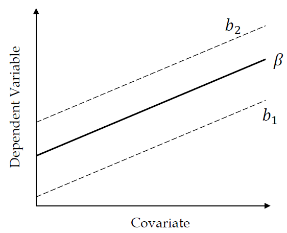
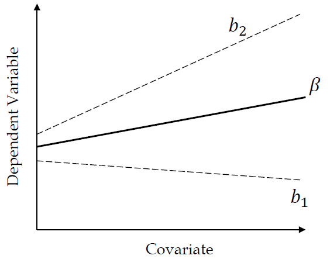
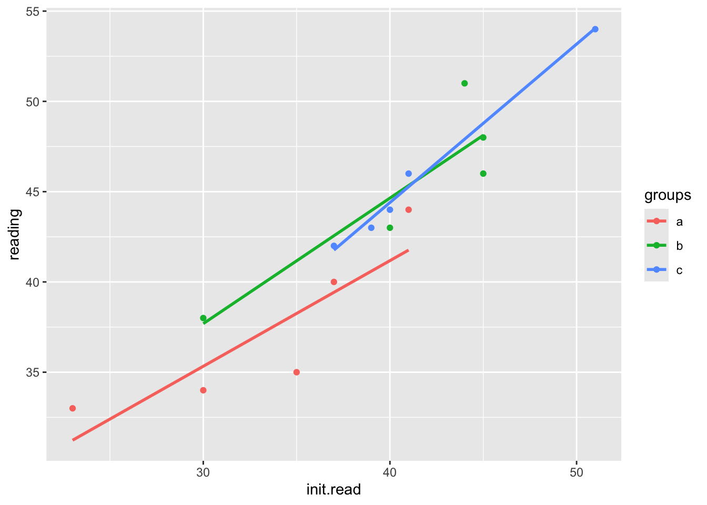

library(rio); library(ggplot2); library(QuantPsyc); library(psych); library(car); library(memisc); library(multcomp)8 Analysis of Covariance
One-way ANCOVA is used to describe the differences in predicted outcomes for a single dependent variable among multiple groups.
The design has one treatment factor that represents group membership, a continuous independent variable, and a continuous dependent measure.
ANCOVA analysis is used when the treatment and covariate do not interact. In this case, ANCOVA allows us to increase the power of our analysis and adjust outcome means due to initial group differences on the covariate.
Example: If we are conducting a study in which we are interested in treatment effects on an achievement variable and we see that IQ is positively correlated with achievement (r = .60). By squaring the correlation between IQ and achievement, we see that IQ accounts for 36% of the within group variance in achievement. We are only interested in the effects of treatment. ANCOVA luckily removes the part of the variance due to IQ. It controls for the effects of IQ.
Treatment 1
|
Treatment 2
|
|||
|---|---|---|---|---|
| IQ | Achievement | IQ | Achievement | |
| 100.00 | 23.0 | 96.00 | 19.00 | |
| 113.00 | 31.0 | 108.00 | 26.00 | |
| 98.00 | 35.0 | 122.00 | 31.00 | |
| 110.00 | 28.0 | 103.00 | 22.00 | |
| 124.00 | 40.0 | 132.00 | 36.00 | |
| 135.00 | 42.0 | 120.00 | 38.00 | |
| 118.00 | 37.0 | 111.00 | 31.00 | |
| 93.00 | 29.0 | 93.00 | 25.00 | |
| 120.00 | 34.0 | 115.00 | 29.00 | |
| 127.00 | 45.0 | 125.00 | 41.00 | |
| 115.00 | 33.0 | 102.00 | 27.00 | |
| 104.00 | 25.0 | 107.00 | 21.00 | |
| Mean | 113.08 | 33.5 | 111.17 | 28.83 |
Run a t-test comparing the two treatment groups.
dat <- import("data/ancova_example.sav")
head(dat) treatment achieve IQ ach_mean iq_mean achmsqrd iqmsqrd cross
1 1 23 100 -8.17 -12.125 66.7489 147.015625 99.06125
2 1 31 113 -0.17 0.875 0.0289 0.765625 -0.14875
3 1 35 98 3.83 -14.125 14.6689 199.515625 -54.09875
4 1 28 110 -3.17 -2.125 10.0489 4.515625 6.73625
5 1 40 124 8.83 11.875 77.9689 141.015625 104.85625
6 1 42 135 10.83 22.875 117.2889 523.265625 247.73625t.test(dat$achieve ~ dat$treatment, var.equal = TRUE) # assume equal variance between groups
Two Sample t-test
data: dat$achieve by dat$treatment
t = 1.675, df = 22, p-value = 0.1081
alternative hypothesis: true difference in means between group 1 and group 2 is not equal to 0
95 percent confidence interval:
-1.111453 10.444786
sample estimates:
mean in group 1 mean in group 2
33.50000 28.83333 # t.test(dat$achieve ~ dat$treatment, var.equal = FALSE) # equal variance between groups not assumed. This is default.
# leveneTest(dat$achieve ~ as.factor(dat$treatment)) # test equality of variance between groupsExample: If we are conducting a study in which we are interested in treatment effects on an achievement variable and we see that IQ is positively correlated with achievement (r = .60). By squaring the correlation between IQ and achievement, we see that IQ accounts for 36% of the within group variance in achievement. We are only interested in the effects of treatment. ANCOVA luckily removes the part of the variance due to IQ. It controls for the effects of IQ.
Run an ANOVA
model.anova <- aov(achieve ~ as.factor(treatment), data = dat)
summary(model.anova) Df Sum Sq Mean Sq F value Pr(>F)
as.factor(treatment) 1 130.7 130.67 2.805 0.108
Residuals 22 1024.7 46.58 Run an ANCOVA
model.ancova <- aov(achieve ~ IQ + as.factor(treatment), data = dat) # Type I Sums of Squares. Order of entry matters!
summary(model.ancova) Df Sum Sq Mean Sq F value Pr(>F)
IQ 1 711.2 711.2 41.76 2.1e-06 ***
as.factor(treatment) 1 86.5 86.5 5.08 0.035 *
Residuals 21 357.6 17.0
---
Signif. codes: 0 '***' 0.001 '**' 0.01 '*' 0.05 '.' 0.1 ' ' 1ANCOVA provides a more powerful test than ANOVA (and the t-test) for this example.
Other Examples: 1. Reduce bias when comparing intact or self-selected groups (e.g., males vs. females) 2. Adjust the posttest means on the dependent variable for any initial differences that may be present
8.1 Purposes of ANCOVA
- Elimination of systematic bias
Systematic bias: Groups differ systematically on some variable that is related to the dependent variable. Not sure if differences are due to treatment or group differences when beginning the study.
Random assignment takes care of systematic bias, but we are not always able to randomly assign participants to groups.
You could match participants on certain variables.
ANCOVA can reduce this bias.
- Reduction of within group or error variance
- What happens when we have smaller error variance? \(M{S_b}/M{S_w}\)
To remove the variance due to the covariate:
- The amount of variance on the dependent variable that is accounted for by the covariate is the squared value of the correlation between the two variables ( $r_{xy}^{2}$). The within group variance in ANCOVA has removed the portion due to the covariate:\[M{{S}_{w}}-M{{S}_{w}}r_{xy}^{2}=M{{S}_{w}}(1-r_{xy}^{2})\]
- The new error term used in ANCOVA:\(MS_{w}^{*}=M{{S}_{w}}(1-r_{xy}^{2})[1+1/({{f}_{e}}-2)]\), where \({f_e}\) is the error degrees of freedom.
- Example: One-way ANOVA (3 groups with 20 participants per group). The F = 200/100 = 2, which is not significant. Participants were pretested, but the pretest was not used as a covariate and is correlated with the posttest at .71. Using ANCOVA: $MS_{w}^{*}\approx 100[1-{{(.71)}^{2}}]=50$So, for example: \({{F}^{*}}=190/50=3.8\), which is significant.
8.2 Choice of covariates to use
Variables that should correlate with the dependent variable
Variables that have been shown to correlate with similar types of participants
Ideally, the covariates should correlate significantly with the dependent variable but low correlations with other covariates (if two covariates are highly correlated with each other (e.g., .80), they will be removing much of the same error variance from the dependent variable.
Limit the number of covariates to satisfy the following relationship: \(\frac{[C+(J-1)]}{N}<.10\), where C is the number of covariates, J is the number of treatment groups, and N is the total sample size. In studies where the ratio is greater than .10, the adjusted means become unstable.
8.3 Statistical Model for ANCOVA
\[y_{ij} = \mu + {\alpha _j} + \beta {z_{ij}} + {\varepsilon _{ij}}\] - \(y_{ij}\) is the ith score of the jth group. - \(\mu\) is the constant common to all y scores - \(\alpha_j\) is teh effect of the jth treatment level (i.e, the group-specific effect) - \(\beta {z_{ij}}\) quantifies the influence of the covariate (z) on the dependent variable (y). Note that the parameter \(\beta\) represents the degree of (linear) relation between the covariate and teh dependent variable. - \(\varepsilon _{ij}\) reflects random variation due to any uncontrolled source.
ANCOVA combined features of ANOVA and linear regression. The group effects are specificed as in ANOVA, the relation between the covariate and the dependent variable is specified as in linear regression.
8.4 ANCOVA Assumptions
Same three assumptions in ANOVA apply Section 7.4
- Independence: the residuals are independent in the population.
- Consider study circumstances to identify any possible violations.
- Normality: the residuals are normally distributed for each group in the population.
- Inspect the distribution of the residuals for each group (use visual displays, descriptive and Shapiro-Wilk test to determine if residuals for each group are non-normally distributed).
- Homogeneity of Variance: the variance of the residuals is the same for each group in the population.
- Use Levene’s test to identify if the residual variation is the same across groups.
ANCOVA-specific Assumptions
Linearity: The relationship between the covariate and the dependent variable is linear for each group in the population.
Inspect the scatterplot of the covariate and outcome within each group to determine that the relationship is reasonably linear.
Independence of the covariate and the independent variable: The covariate shares its variance only with the DV that is not explained by the IV.
- Rarely the case in reality
- If violated, the effect of the IV is confounded with the effect of the covariate.
Homogeneity of regression slopes: The regression slope has the same value across all groups in the population. The regression lines of different groups should be parallel.
- No interaction effect between the covariate and the IV.
- Test if the interaction term between the IV and the covariate is statistically significant.
Homogeneity of regression slopes
Below is a figure where the regression slope does not depend on the groups.

This is a figure where the regression slop varies with the groups.

8.5 Empirical Example
Reading achievement and training conditions - Dependent variable: Reading achievement (RA) - Independent variable: Training condition (a = control, b = non-parental, c = parental) - Covariate: Initial reading experience (IRE)
reading <- c(40,33,34,35,44,48,43,51,46,38,44,46,42,54,43)
groups <- as.factor(rep(c("a", "b", "c"), each = 5))
init.read <- c(37,23,30,35,41,45,40,44,45,30,40,41,37,51,39)
dat <- data.frame(reading, groups, init.read)
model.anova<-aov(reading ~ groups, data = dat)
summary(model.anova) Df Sum Sq Mean Sq F value Pr(>F)
groups 2 230.5 115.3 4.968 0.0268 *
Residuals 12 278.4 23.2
---
Signif. codes: 0 '***' 0.001 '**' 0.01 '*' 0.05 '.' 0.1 ' ' 1model.ancova<-aov(reading ~ init.read + groups, data = dat) #<<
summary(model.ancova) Df Sum Sq Mean Sq F value Pr(>F)
init.read 1 443.6 443.6 101.222 6.96e-07 ***
groups 2 17.1 8.6 1.956 0.188
Residuals 11 48.2 4.4
---
Signif. codes: 0 '***' 0.001 '**' 0.01 '*' 0.05 '.' 0.1 ' ' 18.5.1 Assumptions - Normality
tapply(dat$reading, groups, shapiro.test) # Testing each grouop separately$a
Shapiro-Wilk normality test
data: X[[i]]
W = 0.88391, p-value = 0.3274
$b
Shapiro-Wilk normality test
data: X[[i]]
W = 0.98143, p-value = 0.9421
$c
Shapiro-Wilk normality test
data: X[[i]]
W = 0.81558, p-value = 0.1079#tapply(dat$init.read, groups, shapiro.test)8.5.2 Assumptions - Homogeneity of Variance
#library(car)
leveneTest(reading ~ groups, data = dat)Levene's Test for Homogeneity of Variance (center = median)
Df F value Pr(>F)
group 2 0.0363 0.9645
12 8.5.3 Assumptions - Independence of the covariate and the independent variable
This assumption can be tested using a regression model where the covariate is used as the outcome. Non-significant terms indicate independence.
summary(lm(init.read ~ groups, data = dat))
Call:
lm(formula = init.read ~ groups, data = dat)
Residuals:
Min 1Q Median 3Q Max
-10.8 -2.9 -0.6 4.0 9.4
Coefficients:
Estimate Std. Error t value Pr(>|t|)
(Intercept) 33.200 2.813 11.802 5.82e-08 ***
groupsb 7.600 3.978 1.910 0.0803 .
groupsc 8.400 3.978 2.111 0.0564 .
---
Signif. codes: 0 '***' 0.001 '**' 0.01 '*' 0.05 '.' 0.1 ' ' 1
Residual standard error: 6.29 on 12 degrees of freedom
Multiple R-squared: 0.3116, Adjusted R-squared: 0.1969
F-statistic: 2.716 on 2 and 12 DF, p-value: 0.10648.5.4 Assumptions - Homogeneity of regression slopes
Homogeneity of regression slopes can be tested through including an interaction term in the ANCOVA model. A non-significant interaction term indicates equal regression slopes.
model2 <- aov(reading ~ init.read* groups, data = dat)
summary(model2) Df Sum Sq Mean Sq F value Pr(>F)
init.read 1 443.6 443.6 95.269 4.38e-06 ***
groups 2 17.1 8.6 1.841 0.214
init.read:groups 2 6.3 3.2 0.677 0.532
Residuals 9 41.9 4.7
---
Signif. codes: 0 '***' 0.001 '**' 0.01 '*' 0.05 '.' 0.1 ' ' 1Anova(model2, type = "III")Anova Table (Type III tests)
Response: reading
Sum Sq Df F value Pr(>F)
(Intercept) 53.403 1 11.4693 0.008042 **
init.read 65.995 1 14.1738 0.004452 **
groups 3.636 2 0.3905 0.687664
init.read:groups 6.300 2 0.6766 0.532440
Residuals 41.905 9
---
Signif. codes: 0 '***' 0.001 '**' 0.01 '*' 0.05 '.' 0.1 ' ' 1ggplot(data=dat, aes(x=init.read, y=reading, group=groups, color=groups)) +
geom_point() +
geom_smooth(method = "lm", se = FALSE)
8.6 Post-hoc Tests using the multcomp package
# library(multcomp)
out <- glht(model.ancova, linfct = mcp(groups = "Tukey"))
summary(out)
Simultaneous Tests for General Linear Hypotheses
Multiple Comparisons of Means: Tukey Contrasts
Fit: aov(formula = reading ~ init.read + groups, data = dat)
Linear Hypotheses:
Estimate Std. Error t value Pr(>|t|)
b - a == 0 2.70817 1.51197 1.791 0.217
c - a == 0 2.75114 1.55054 1.774 0.222
c - b == 0 0.04297 1.32621 0.032 0.999
(Adjusted p values reported -- single-step method)User-defined contrasts:
K <-rbind(c(1, -1/2, -1/2), # compares control versus mean of both treatment groups
c(0, -1, 1)) # compares means of treatment 1 and 2
rownames(K) <-c("control vs ave.treatment", "treatment 2 vs treatment 1")
colnames(K) <-c("Group A", "Group B", "Group C")
K Group A Group B Group C
control vs ave.treatment 1 -0.5 -0.5
treatment 2 vs treatment 1 0 -1.0 1.0out <-glht(model.ancova, linfct= mcp(groups = K))
summary(out)
Simultaneous Tests for General Linear Hypotheses
Multiple Comparisons of Means: User-defined Contrasts
Fit: aov(formula = reading ~ init.read + groups, data = dat)
Linear Hypotheses:
Estimate Std. Error t value Pr(>|t|)
control vs ave.treatment == 0 -2.72965 1.38036 -1.977 0.138
treatment 2 vs treatment 1 == 0 0.04297 1.32621 0.032 0.999
(Adjusted p values reported -- single-step method)8.7 ANCOVA as a GLM
The ANCOVA model can be reformulated as as GLM using the following regression equation:
\[y = {\beta _0} + \sum\limits_{j = 1}^{k - 1} {{\beta _j}{x_j} + {\beta _{yz}}z + \varepsilon }\]
\({\beta _0}\) is the intercept; \({\beta _j}\) represents the k-1 slopes of the k groups; \({\beta _{yz}}\) is the slope of the covariate (z); \(\varepsilon\) is the error term.
Equation of the ANCOVA example, with group A as the reference group:
\[y = {\beta _0} + {\beta _1}condB + {\beta _2}condC + {\beta _3}init.read + \varepsilon\]
Dummy coding with Group A as the reference group.
| Group B | Group C | Initial Reading | |
|---|---|---|---|
| 0 | 0 | 37 | |
| 0 | 0 | 23 | |
| Group A | 0 | 0 | 30 |
| 0 | 0 | 35 | |
| 0 | 0 | 41 | |
| 1 | 0 | 45 | |
| 1 | 0 | 40 | |
| Group B | 1 | 0 | 44 |
| 1 | 0 | 45 | |
| 1 | 0 | 30 | |
| 0 | 1 | 40 | |
| 0 | 1 | 41 | |
| Group C | 0 | 1 | 37 |
| 0 | 1 | 51 | |
| 0 | 1 | 39 |
ANCOVA can be re-characterized as model selection problem:
Step 1: Estimate a base model that incorporates all covariates.
m0 <-lm(reading ~ init.read, data = dat)Step 2: Add the independent variable of interest to the model.
m1 <-lm(reading ~ init.read + groups, data = dat)Step 3: Check whether the independent variable contributes to predicting the outcome.
anova(m0, m1)Analysis of Variance Table
Model 1: reading ~ init.read
Model 2: reading ~ init.read + groups
Res.Df RSS Df Sum of Sq F Pr(>F)
1 13 65.347
2 11 48.205 2 17.141 1.9557 0.1876contrasts(dat$groups) <- contr.treatment(n = 3, base = 1)
model3 <-lm(reading ~ init.read + groups, data = dat)
contrasts(dat$groups) 2 3
a 0 0
b 1 0
c 0 1summary(model3)
Call:
lm(formula = reading ~ init.read + groups, data = dat)
Residuals:
Min 1Q Median 3Q Max
-3.4533 -0.9807 -0.1244 0.9933 3.5719
Coefficients:
Estimate Std. Error t value Pr(>|t|)
(Intercept) 14.08307 3.32414 4.237 0.0014 **
init.read 0.69629 0.09607 7.248 1.65e-05 ***
groups2 2.70817 1.51197 1.791 0.1008
groups3 2.75114 1.55054 1.774 0.1037
---
Signif. codes: 0 '***' 0.001 '**' 0.01 '*' 0.05 '.' 0.1 ' ' 1
Residual standard error: 2.093 on 11 degrees of freedom
Multiple R-squared: 0.9053, Adjusted R-squared: 0.8794
F-statistic: 35.04 on 3 and 11 DF, p-value: 6.351e-06anova(model3)Analysis of Variance Table
Response: reading
Df Sum Sq Mean Sq F value Pr(>F)
init.read 1 443.59 443.59 101.2220 6.957e-07 ***
groups 2 17.14 8.57 1.9557 0.1876
Residuals 11 48.21 4.38
---
Signif. codes: 0 '***' 0.001 '**' 0.01 '*' 0.05 '.' 0.1 ' ' 1contrasts(dat$groups) <- contr.treatment(n = 3, base = 2)
model4 <-lm(reading ~ init.read + groups, data = dat)
contrasts(dat$groups) 1 3
a 1 0
b 0 0
c 0 1summary(model4)
Call:
lm(formula = reading ~ init.read + groups, data = dat)
Residuals:
Min 1Q Median 3Q Max
-3.4533 -0.9807 -0.1244 0.9933 3.5719
Coefficients:
Estimate Std. Error t value Pr(>|t|)
(Intercept) 16.79124 4.02999 4.167 0.00157 **
init.read 0.69629 0.09607 7.248 1.65e-05 ***
groups1 -2.70817 1.51197 -1.791 0.10079
groups3 0.04297 1.32621 0.032 0.97474
---
Signif. codes: 0 '***' 0.001 '**' 0.01 '*' 0.05 '.' 0.1 ' ' 1
Residual standard error: 2.093 on 11 degrees of freedom
Multiple R-squared: 0.9053, Adjusted R-squared: 0.8794
F-statistic: 35.04 on 3 and 11 DF, p-value: 6.351e-06anova(model4)Analysis of Variance Table
Response: reading
Df Sum Sq Mean Sq F value Pr(>F)
init.read 1 443.59 443.59 101.2220 6.957e-07 ***
groups 2 17.14 8.57 1.9557 0.1876
Residuals 11 48.21 4.38
---
Signif. codes: 0 '***' 0.001 '**' 0.01 '*' 0.05 '.' 0.1 ' ' 1